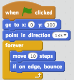
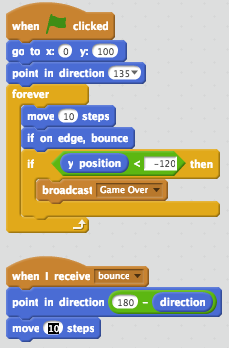
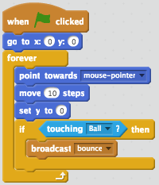
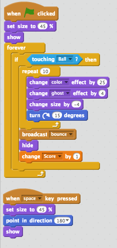

by Sarthak Navjivan
sarthak@codetocreate.org

back to course
Scratch
Lesson 2: Brick Breaker
If you have ever played the game brick breaker, then you understand that there are three main components to the game. There are the bricks, paddle, and ball. The objective of the game is to clear the bricks by bouncing the ball off the bricks. If the brick misses the paddle, then you lose the game.
This tutorial will guide you deeper into the logic of computer science. It may be confusing at first, but the more you play around the more you will begin to understand the logic. In this tutorial, we will first start with building the individual motions of the components and then we will create the interactive relationships between the components.
Create Interactive Panel
Construct a new Sprite and name it “Paddle”, see the image below of an example. Setting the Position of the Paddle. Go to the events tab, drag and drop when green flag clicked set the position of the block at a x= 0 and y = 0.
Setting the Motion of the Paddle. Drag and drop the motion block point towards mouse pointer. Drag and drop the motion block and move 10 steps. Drag and drop the motion block set y = 0. Click on the Paddle info button in the Sprite box and change the rotation style to fixed.
We understand that the ball will have to ricochet off of the brick. We will get to this part later, but for now, let us predictively drag and drop an if/then statement. Let’s predictively state if the ball touches the paddle, then it will bounce.
Experiment and see if your paddle has regular motion.
Movement and Placement by Cartesian Graph Summary
We used the coordinate system to set the position of the the paddle. This is important to understand that Scratch uses Cartesian Graphs. Locations can be assigned numerical values. Change the background of the stage backdrop to the XY graph which can be found in the “other” backdrop category.
If/then statements
Let us review the concept of the if/then statement, that is similar to cause and effect. Imagine you want to watch tv. “If” you press the TV’s power button, “then” the TV will turn on. Again, in relation to the paddle and the ball, if the ball touches the paddle, then it will bounce. An action triggers a responsive action.
1. Constructing the ball motion
Create a new sprite and for convention’s sake, we will be using a ball from the thing category. Rename the new sprite as Ball.
2. Set the placement of the ball
Drag and drop the Event block when green flagged click. Drag and drop the Motion block go to x and y and change the y value. Drag and drop the Motion block point in direction 135 (so that it points down). Add a forever command and drag and drop the motion block move 10 steps and if on edge bounce. As of now, it will look something like this.
3. Preemptive and Predictive steps
Since we are budding computer scientists, we understand that if the ball goes past the paddle, the player loses the game. So let’s predictively put an if/then statement in for now.
We also understand that if the ball touches the paddle, it will bounce. Let’s leave this for now and we’ll come back to this later.

Anticipating Interactions
Much like in the constructing of the paddle, we used the cartesian coordinate system as a way to a set the initial position of the ball. We also anticipated the interaction between the ball and the paddle and if the ball passes the paddle,the player loses the game.
Ball and Paddle interaction I
Drag and drop an if/then block within the forever command but below the motion blocks.
For the paddle to interact with the ball, the paddle has to sense the ball. Click on the Sensing script and drag and drop the touching block, into the “if” statement block
For the “then” statement, drag and drop the Broadcast command block and click on the drop down menu. Create a new message and call it bounce.
Ball and Paddle Interaction II
If the paddle broadcasts a message, then the ball should receive a message. Drag and drop the when I receive command block and select bounce from the drop down menu. Drag and drop the Motion block point that accounts orients motion with direction. Drag and drop the subtraction block from the Operator script. Put 180 in the first place holder and then the direction block from the motion script. Drag and drop move 10 steps


Interacting Objects Summary
We learned how to establish an interactive relationship between the paddle and the ball. When the paddle touches ball, it broadcasts a message to the ball, which we labeled bounce. The ball receives that particular message and then executes it's bouncing motion. In a way, the relationship between the paddle and the ball loosely mirrors the body’s reflexes. Imagine it’s a cold winter day and your huddled up next to a glorious raging fire. You put your hands out to warm them up because the fire is “broadcasting” heat. If you touch the fire, you’re body will immediately react and your hands will jolt away from the fire, as they do not want to be burned!
Winning and Losing Scenarios
Click on the Ball’s Sprite and an if/then command block. Within the if placeholder, add a less than (<) operator block. Place a y position motion into the first placeholder and a numerical y value into the second placeholder. Use the broadcast message and create a new message called game over. Implementing the Game Over Sprite. Turn the canvas into a vector and use the text box to say game over. Drag and drop the when green flag clicked. Drag and drop the hide motion. Create a new Event with when I receive “Game Over”. Drag and Drop the command block show and subsequently the control block stop all.
Add a control event. Add a hide motion from the looks script. Add a data script and create a variable called score. Drag and drop a data block to set score to. Drag and drop a command block called wait until and set the score equal to whatever number you’d like. Drag and drop the Look script show. Drag and drop the Control command stop all.
Brick Building
Make a new sprite and label it the brick. Drag and drop an Event called when green flag clicked. Add a forever loop. Add an if/then statement. Drag and drop a sensing script and use the broadcast bounce. When a brick breaks make sure it adds a score. When you’re done creating a brick, duplicate it by through the left click.

Bringing it all together: We constructed a losing scenario and a winning scenario. In the losing scenario, we attached the losing outcome to the ball surpassing some value of y. In the winning scenario, we attached the destruction of a brick to a variable called score. To win the game every bounce message that is passed between a ball and the brick is counted as a score. Isn’t this fascinating? Can you see the logic?
NEXT Space Invaders
Learn to fire projectiles by building a game where your spaceship has to repel invading aliens
BACK
A simple, fun, and colorful introduction to computer science